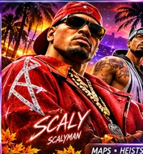

ELARIO STUDIOS PRESENTS · TEAM JURA ORIGINAL DESIGNED BRAND
YOUR WORLD.
YOUR NEXT MOVE.
Find the place. Follow the route. Save your progress. Every tool starts here — no guessing which version of Atlas to open.

Approved characters · new cinematic scene proposed for brand reviewIndependent fan companion · Not affiliated with Rockstar Games · GTA VI locations remain unverified community research
YOUR ATLAS · LOCAL-FIRST PROGRESS
Pick up where you left off
Your next adventure
Open collection HQChoose a world below, or open your personal collection dashboard. Your progress is saved in this browser, not synced to Rockstar.
FIND YOUR MAP
Four good places to begin
 GTA V · STORYExplore Los SantosMap · collectibles · coordinates · routes
GTA V · STORYExplore Los SantosMap · collectibles · coordinates · routes
 GTA ONLINEYour Online mapSeparate Online markers · daily status · routes
GTA ONLINEYour Online mapSeparate Online markers · daily status · routes
 GTA VI · LEONIDAExplore LeonidaInteractive map · official poster · source-labeled VI research
GTA ONLINE · HEISTPlan Cayo PericoHeist planner · collectible reference · notes
GTA VI · LEONIDAExplore LeonidaInteractive map · official poster · source-labeled VI research
GTA ONLINE · HEISTPlan Cayo PericoHeist planner · collectible reference · notes
WHAT WOULD YOU LIKE TO DO?
Real tools, not decoration
Continue a huntSave completed collectibles and plan the next set
Open My GarageOwned models, individual parking bays and build notes
Plan a heistMission workspaces, checklists and source notes
Check Online activityReset windows and source-dated information, never fake live spawns
Browse vehiclesGTA V model references and direct-to-garage action
Your Atlas PassportA personal overview and reference workspace
BUILDING IT THE RIGHT WAY
Community-first, source-aware.
GTA V and GTA Online share geographical artwork but keep gameplay and completion states separate. GTA VI sources are community research, not an official released-game coordinate database. Unpositioned records are searchable, never fabricated pins.